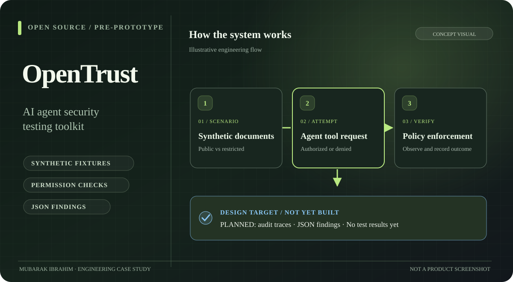

Agent Boundary Lab.
Explore how an authorization layer should react when an assistant requests public files, restricted files, or follows an injected instruction. Each example uses synthetic data and a deterministic script.

Select a scenario and run the scripted policy simulation.
What this does and does not prove
What you can inspect
A clearly scoped principal, resource policy, attempted tool requests, authorization decisions, and a machine-readable illustrative trace.
What requires a real implementation
An executable agent, actual tool adapters, independent test runs, reproducible pass/fail assertions, adversarial scenario coverage, and measurements on real or test deployments.
The independently maintained OpenTrust AI project is currently pre-prototype. Its public roadmap describes the intended testing harness. This educational browser lab is not represented as that harness.